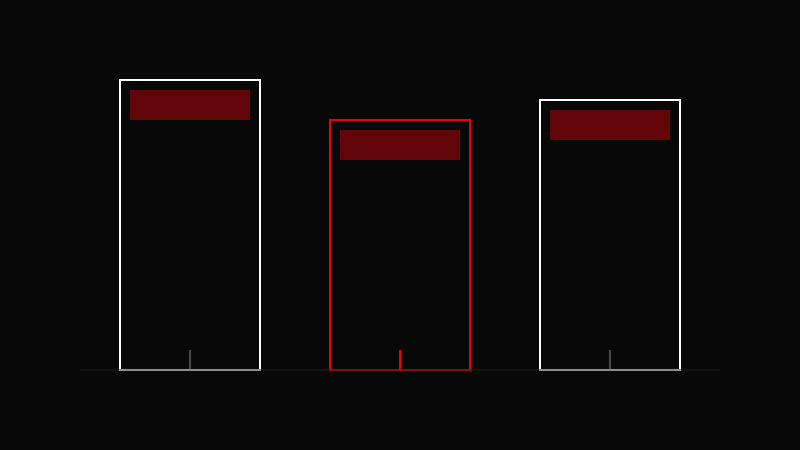

AVA CREATORS TOOLKIT · STRATEGY
CONTENT PILLARS
The System That Makes You Consistent
The System That Makes You Consistent

Every post must serve a pillar.
Define 3–5 core pillars.
Map ideas to pillars.
Build weekly themes around them.
Review and refine monthly.
Your strongest pillar should produce 50% of your content.
Posting randomly without a strategic framework.